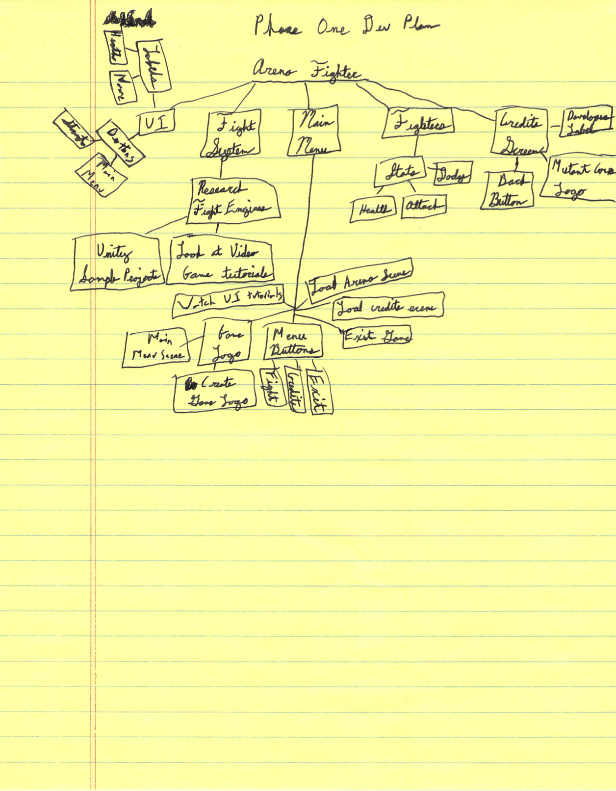
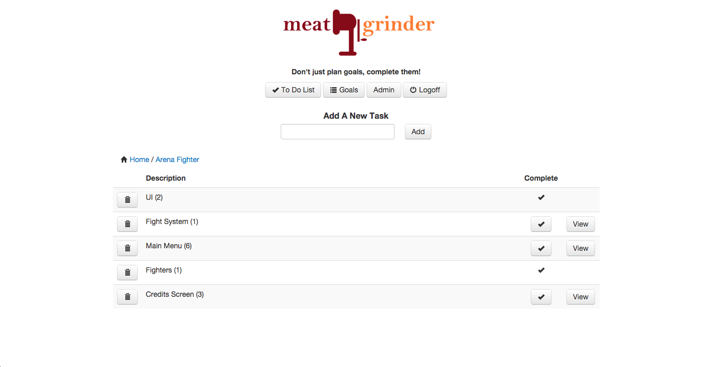
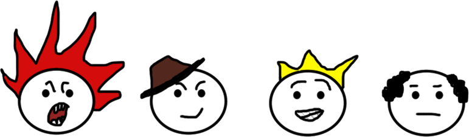
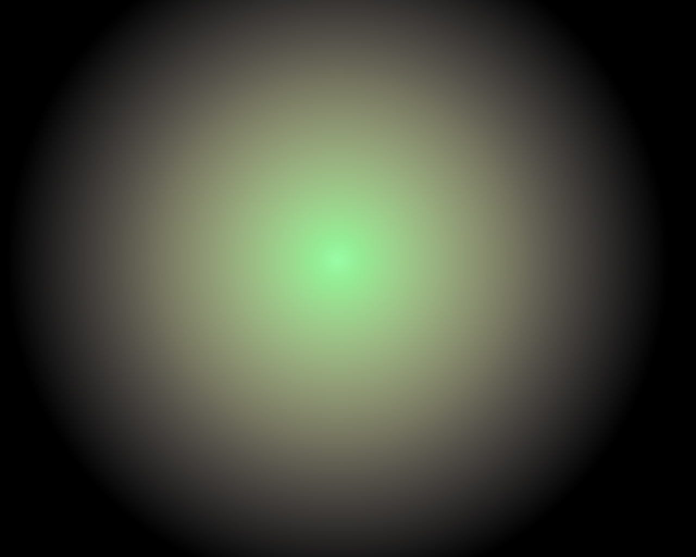
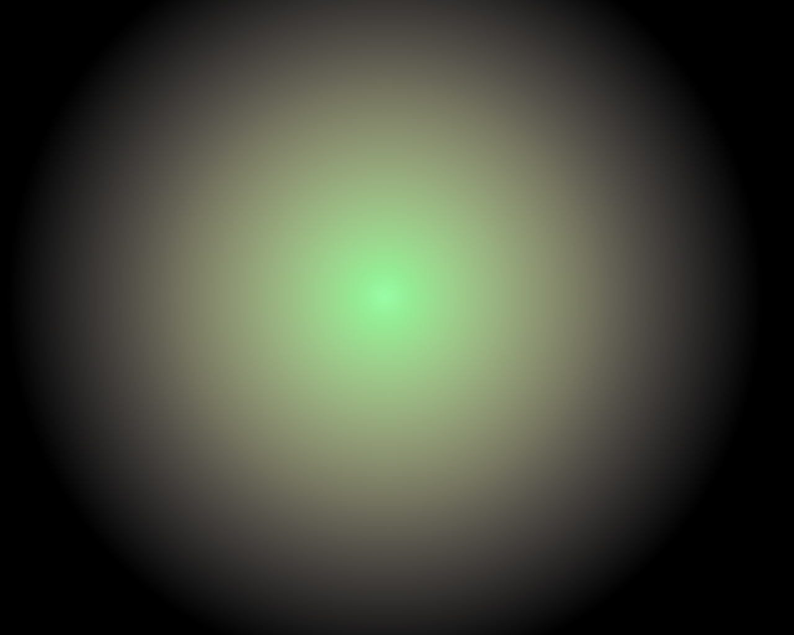

Toast
Description
Create a party of characters and setup tactics for each to fight against the AI for items and players for XP. Player has no input and fight relies on tactics defined by player before the fight.
There will be two modes of fighting, arena fighting against the AI and pvp fighting against other players. Arena fighting will be used to get new items and equipment for your party to use. No experience will be earned in these fights, and the level and quality of items and gear rewarded increase with the number of waves completed. To level your party and get be able to equip better gear, you will earn experience through pvp fights with other players.
The goal is to create a game that allows me to use the tactics and strategies similar to those found in Final Fantasy XII and Dragon Age to put your skills in strategy against others. Dream goals would be to create a match making and fight replay system similar to that found in Clash of Clans.
Updates
12/1/2014
Just a quick update for now. While I am still making progress on the tactics system, or rules engine, I was showing my work to the family over the weekend and noticed that the Game Over label wasn't anchored properly. This meant that instead of keeping the label just above the Start and Main Menu buttons as I planned, its position would move up and down freely with different resolutions. In my case, this made it virtually impossible to click the Start button. This is fixed and I have updated the builds with this change.
11/27/2014
Today I finished the arena waves, wrapping up the second phase. Now the game tracks what wave you are in, and for each wave, the number of monsters is increased up to a max of four per wave. No screen shots this time, I have created a Windows and Mac build to check out instead.
Up next, the start of the next phase, is the creation of the tactics system. This is what will allow customized party member actions and really make the game fun and more strategic. I will be doing quite a bit of code cleanup and refactoring during this phase as well.
While not quite exciting yet, feel free to try out the current prototype and send me feedback.
11/23/2014
Wrapped up the first phase last night and started on the second phase today. In order to build the team of four and have waves of enemies, I had to make the fight engine and UI code modular. I ended up wrapping all of the code and UI labels into one fighter prefab. Now I can add as many fighters, monsters, or enemies as I want and they will all work the same. I also have all fighters, the term used for fighters, monsters, and anything else that fights, randomly targeting a member of the opposing team before each attack.
Next up are the status labels which will indicate each fighter's current action as well as damage taken or whether an attack is dodged. I am really excited about building the enemy waves though so I might just do that first. Once I have the enemy waves done, I will throw together and post a build, though it won't be too much fun until after the tactics are put in place.
For now, here are some screen shots of the current progress. Bonus screen shot of some of the code that is badly in need of refactoring.
11/22/2014
There are a lot of things that have been done so far to include as updates so this will be a big one.
So first things first, I have created a very light development plan for the game. So far I have detailed the progression of the games development through the first four phases.
Click here to see the development plan.
I used paper and pen to map out and create a development strategy for the first phase. I will warn you now, even I find it interesting to read my own hand writing.

I am using Meat Grinder to plan out how to do the first phase. I like Meat Grinder for two reasons. First, I built it :), and second, I like to plan my work backwards, from completed project back to the first tasks, which Meat grinder was made for.

To wrap things up, I got some great assets from Mitch to use as avatars for the fighters and monsters as well as a background for the arena

 
